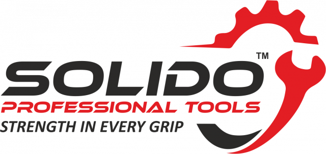

MITEX 2026 · Индия · Стенд 7B4C
Solido Tools
Карточка проверена 10 ноября 2026, 09:28 · Источник ↗ · Снимок оригинальной карточки ↗
О компании
Solido Hand Tools — независимый профессионально управляемый производственный бренд, специализирующийся на выпуске высококачественного ручного инструмента для промышленного, автомобильного и инженерно-технического применения. Обладая многолетним опытом в области ковки и высокоточной обработки, Solido заслужила репутацию производителя надёжного, точного и эффективного инструмента. Широкий ассортимент компании включает гаечные ключи, плоскогубцы и клещи, тиски, режущий инструмент, смазочный инструмент и кожаные аксессуары. Вся продукция разрабатывается и тестируется в соответствии с международными стандартами DIN и ISO. В Solido современные технологии сочетаются с высоким мастерством производства. Каждый продукт проходит строгий контроль качества и производится из высококачественных материалов с применением современных технологий термообработки, обеспечивающих исключительную надёжность даже при интенсивной эксплуатации. Штаб-квартира Solido Hand Tools находится в Индии. Компания работает с клиентами в США и Европе, сотрудничая с OEM-производителями, дистрибьюторами и брендами, выпускающими продукцию под собственной торговой маркой.
Контакты
Все контактные сведения из карточки
Контакты 1851/1A, PHASE 2, METRO ROAD, FOCAL POINT, LUDHIANA Телефон: +91 82890 57500 E-mail: exports@tracforge.com Адрес: 141010, PUNJAB, LUDHIANA, 1851/1A, PHASE 2, METRO ROAD, FOCAL POINT, LUDHIANA E-mail: Exports@solidotools.com Телефон: +91 82890 57500
Все рубрики участника
Mitex - Рубрикатор
- 5. Слесарный, монтажный, столярный, ручной инструмент
Зал
- Зал № 7
Участник выставки
- MITEX
Видео, каталоги и документы
В доступной карточке нет видео или документов. Смотрите сайт участника.